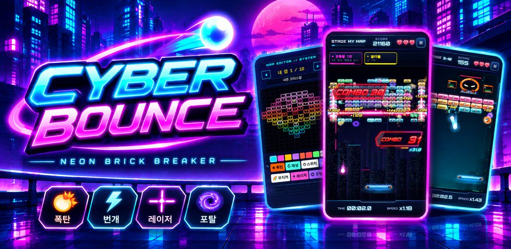

벽돌깨기 : 사이버 바운스
네온 도시의 벽돌을 깨부숴라! 70개 스테이지, 7명의 보스, 나만의 커스텀 맵까지.
Neon brick breaker with 70 stages, 7 bosses and a custom map editor.

네온 도시의 벽돌을 깨부숴라! 70개 스테이지, 7명의 보스, 나만의 커스텀 맵까지.
Neon brick breaker with 70 stages, 7 bosses and a custom map editor.